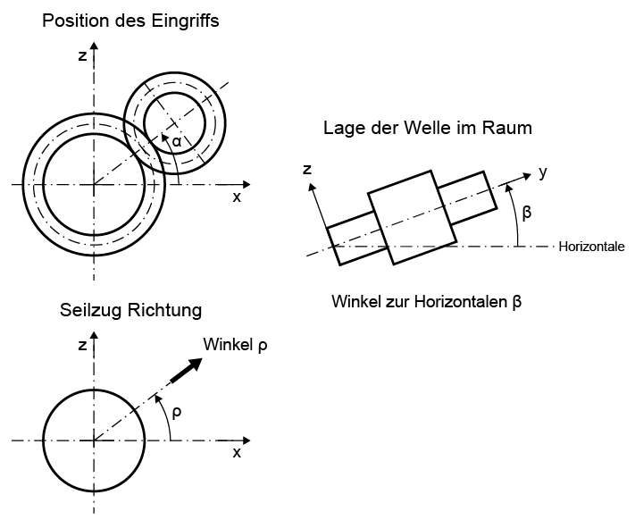

|
|
|


轴轴线在空间中的位置
轴轴线在空间中的位置按相应方式定义（参见图 25.7）。
在计算挠度时，轴（处于水平位置）的重量被视为 Z-Y 平面内的重力。但是，如果轴垂直放置，则由此产生的轴向力（例如）会包含在滚动轴承计算中。如果轴倾斜放置，则相应的分量会正确地分配到 Z-Y 平面和轴向力上。
或者，您可以使用 3 坐标格式输入轴质量方向矢量。

图 25.7：定义轴的位置和接触位置。
Position of shaft axis in space
The position of the shaft axis in space is defined accordingly (see Figure 25.7).
The weight of the shaft (in a horizontal position) is considered a gravitational force in the Z-Y plane when calculating the deflection. However, if the shaft is positioned vertically, the resulting axial force is, for example, included in rolling bearing calculations. If a shaft is positioned at an angle, the relevant components are distributed correctly on the Z-Y plane and on the axial force.
Alternatively, you can use the 3-coordinate format to enter the shaft mass direction vector.
Figure 25.7: Defining the position of the shaft and the position of contact.